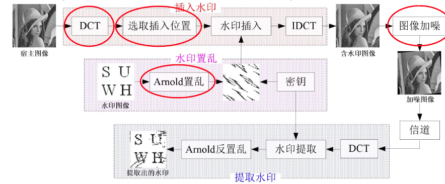
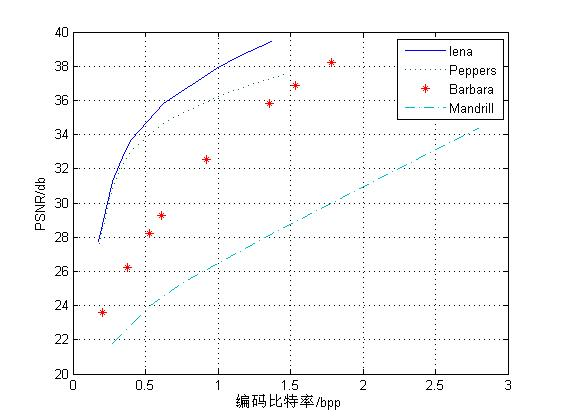
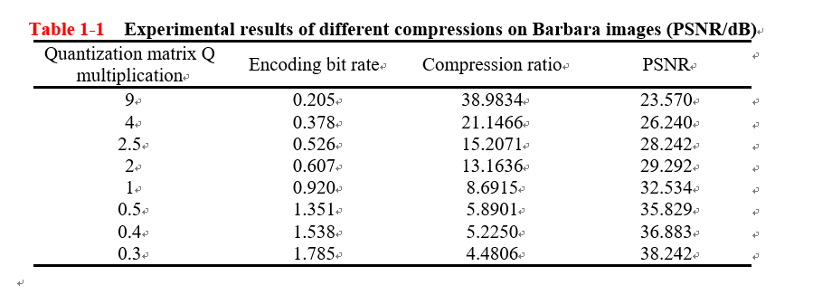
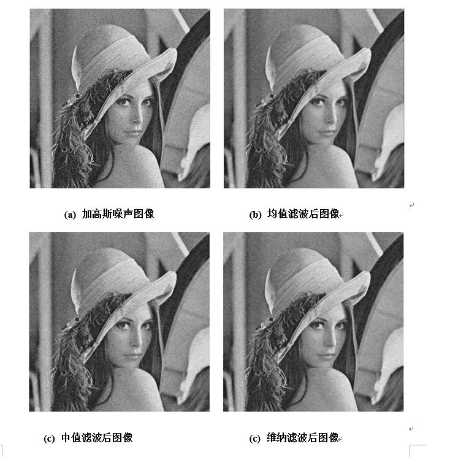
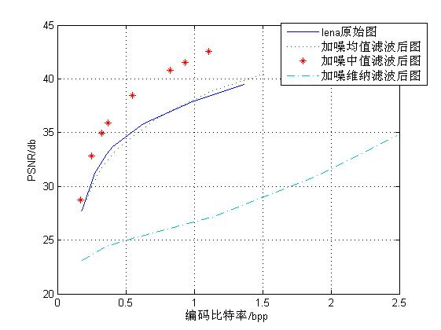
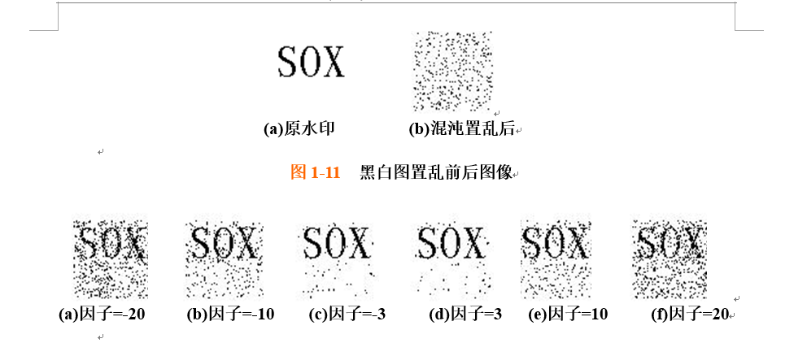
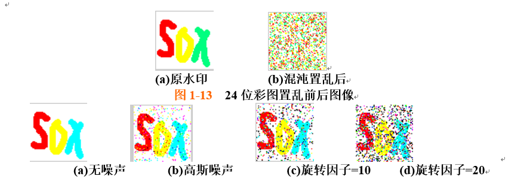
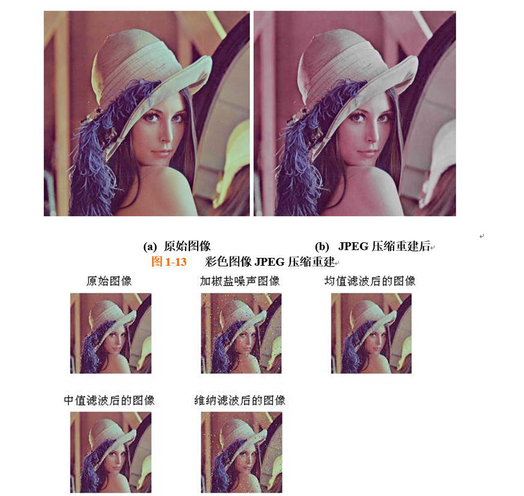

Design of image communication system and its MATLAB simulation
1. The JPEG algorithm based on DCT compresses and decompresses grayscale images 2. Image communication system simulation considering noise 3. Image compression communication system simulation based on downsampling and interpolation 4. Watermarked image communication system simulation 5. Simulation using color image as test image
Block diagram of image communication system with watermark
Rate-distortion curves of Lena, Barbara, Peppers, Mandrill four pictures
Experimental results of different compressions on Barbara images (PSNR/dB)
Simulation results of image communication system considering noise
Comparison of rate-distortion curves between compressed reconstructed image and original image after removing Gaussian noise
Black and white images before and after scrambling images, comparison of watermark images extracted under different rotation factors
The 24-bit color image chaotically scrambles the before and after images, and the watermark image extracted from the color image
Simulation experiment with color image as test image
